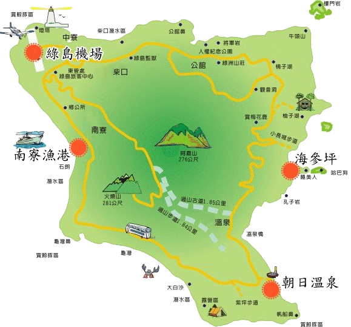
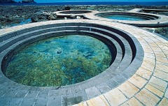

提供離島最便捷的交通，前往綠島旅遊，目前可以搭乘華信航空公司的小型飛機，航行時間只需15分鐘左右。對遊客們是很便利的交通選擇，唯航班飛行受氣候影響很大，搭乘前應先注意天候狀況，如風速太大或降雨等因素都影響飛機航行與否。

為遊客們進入綠島的主要通道，也是綠島最重要的對外港口，在暑假旺季時，出現在南寮漁港的觀光客絡繹不絕，顯示綠島的觀光深受國人的肯定，經由深入淺出的文字說明，提醒前來綠島遊玩的民眾，能認識綠島之美，而這些大自然千萬年來的結晶需要你們的珍惜。

位於綠島東部海岸之中段的海灣，從被稱為「小長城」的步道登臨觀海亭，即可一覽無遺，「睡美人」、慵懶的仰臥在海岸，曲線玲瓏、姿態迷人；趴在一側的「哈巴狗」大耳下垂，眼睛半閉，逗趣可愛。

位於綠島東南海岸嶙峋礁岩間，為世界少有之鹹水溫泉，它的形成是由於海水在附近斷層下滲至地底深處受地熱加溫成熱水後，壓力增加而又從地層縫隙中湧出地表而成溫泉，其間建有三個溫泉池，各池溫度不同。此溫泉處於潮間帶，漲潮時隱入海中，退潮時露出海面，其得天獨厚之特性為綠島最為重要之遊憩資源之一。